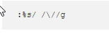
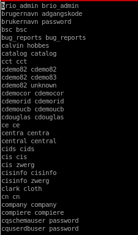

oracle default account wordlist
There is a special user wordlist stored within the metasploit-framework that is perfect for enumerating potential oracle database users located at/usr/share/metasploit-framework/data/wordlists/oracle_default_userpass.txt
lets copy it over to our working directory

The username and passwords in this list are separated by a space instead of a forward slash (/). We’ll have to change it to forward slash so that the ODAT tool is able to parse the file. This can be done in vi using the following command.

:%s/ /\//g


Now that we have a proper list, we can use the passwordguesser module to brute force credentials.